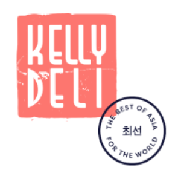
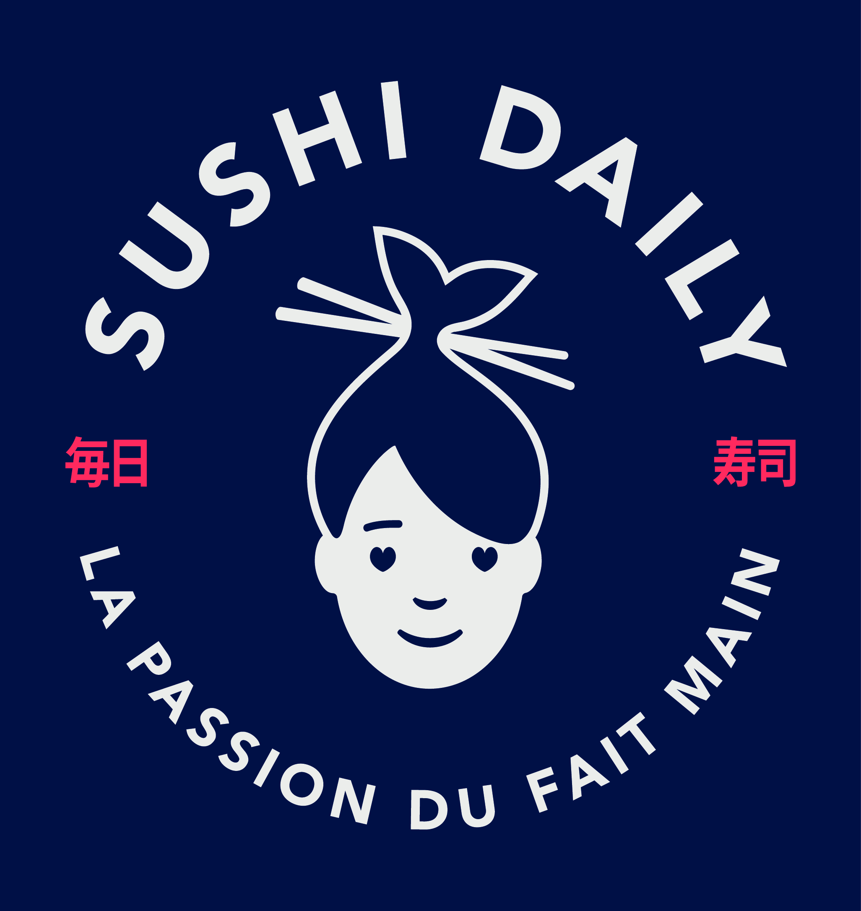

BIENVENUE
Profil de Valentine Ly
Qui suis-je ?
Etudiante en M2 en Marketing Digital à Audencia Business School promo 2022, je recherche un stage de fin d'étude à partir de Janvier 2022.
Je suis dynamique, curieuse et désireuse d'apprendre. Je m'intéresse d'ailleurs à divers centres d'intérêts (la peinture, les réseaux sociaux, la cuisine, etc.).
Mes expériences profesionnelles et associatives
Chef de produits KellyDeli | Paris 9e | 1er Juillet 2020 - 31 décembre 2020


Avec plus de 700 kiosques répartis dans 11 pays d'Europe, Sushi Daily est le leader du marché de kiosques Sushi.
- Gestion de campagnes marketing : recommendations stratégiques, mise en place opérationnelle et créative, suivi et analyse des performances.
- Lancement de nouveaux produits : benchmark, pricing,
- Gestion du compte Facebook : briefs mensuels, réflexion stratégiques, bilans
- Gestion du site web français : implémentation de contenu
- Gestion du référencement des produits sur les cartes Drive et Traiteur des retailers partenaires.
Assistance Marketing KellyDeli | Paris 9e | Janvier 2020 - 31 Juin 2020
- Gestion et suivi des campagnes marketing locales et européennes
- Gestion de l'ouverture de nouveaux points de vente
- Développement d'outils et de supports marketing
- Gestion et déploiement de projet RSE
- Veille concurrentielle
Stagiaire en Marketing Shanghai Jungle | Shanghai, Chine | Juin 2019 - Août 2019
Entreprise créée en 2012 qui propose et met en oeuvre des solutions digitales pour les entreprises et institutions dans le domaine du tourisme qui cherchent à attirer et conquérir les touristes chinois.
- Réalisation d'une étude de marché sur le tourisme chinois (collecte de données grâce aux questionnaire, focus groupes et interview vidéo).
- Elaboration de contenu sur la région de Carinthie pour une mini-app Wechat.
-
International Connection Team | Membre du pôle évènementiel | Janvier 2019 - Décembre 2019
Association qui a pour but d'intégrer les étudiants internationaux et de promouvoir les échanges entre cultures.
Ma formation
Audencia Business School - Programme Grande Ecole
2018 - 2022 | Nantes
Ecole triplement accréditée : AACSB, EQUIS, AMBA.
Semestre de spécialisation en Marketing Digital (Janvier 2021 - Mai 2021)
Classe préparatoire aux grandes écoles - Marcelin Berthelot
2016 - 2018 | Saint-Maur-des-Fossées
Baccalauréat ES - Lycée Petit Val
2013 - 2016 | Sucy en brie
Mention très bien
Compétences
TOEIC 940/990 | Janvier 2019
TOEFL 102/120 | Juillet 2020
Pack Office (EXCEL, POWERPOINT, WORD)
A BIENTOT